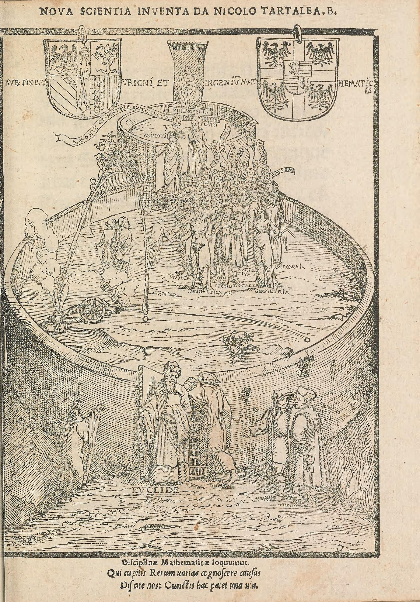
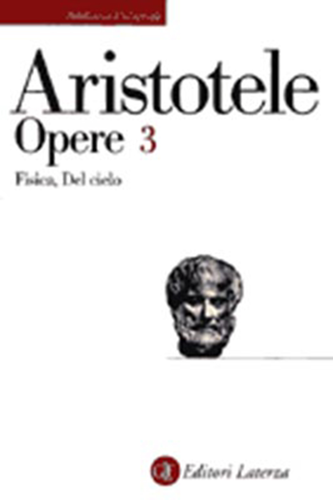
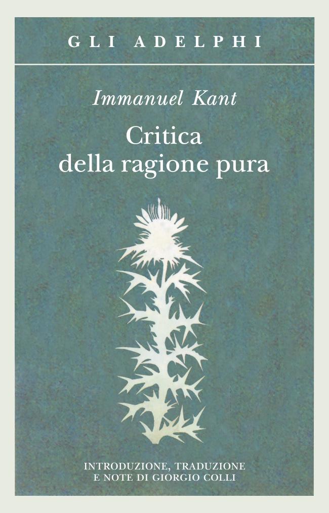

27:53 · 7 OPERE
La filosofia è scienza (e la scienza è filosofia).
Il filo del discorso
La relazione fra filosofia e scienza viene presentata come continuità di domande, prima ancora che come distinzione fra discipline. Dr Divago parte dalla matematizzazione della fisica moderna e richiama Tartaglia, Galileo, Newton e Leibniz per spiegare la crescita della specializzazione. Kant, Voltaire, Peano e i Principia Mathematica introducono poi il problema di una cultura capace di comprendere i fondamenti, oltre a usare tecniche. Il libro divulgativo di Einstein e Infeld offre un esempio del rapporto fra concetti, immagini e formule. Una spiegazione alla lavagna della fissione viene usata dal relatore per mostrare come una notazione possa essere collegata a un processo immaginabile; i dettagli deformati nella trascrizione non sono ricostruiti per congettura. Il richiamo al proprio Problemi filosofici della scienza porta alla causalità, alla logica e alle condizioni della conoscenza. La parte successiva discute il rapporto fra relatività e meccanica quantistica e ricorda la parodia di Alan Sokal: queste riflessioni sono distinte dalla tesi, inesatta in senso letterale, secondo cui la fisica non avrebbe prodotto nuove grandi teorie dagli anni Venti. Il percorso si chiude con la domanda sul perché, la definizione aristotelica del tempo e il confronto fra percezione e pensiero in Kant. La proposta finale è leggere insieme testi scientifici e filosofici, mantenendo aperta la discussione sui concetti e verificando le singole affermazioni tecniche.
I libri nel discorso

Philosophiae naturalis principia mathematica
Identificazione probabile
Copertina: University of California Press · 2016 · traduzione Cohen e Whitman, con Julia Budenz
Copertina editoriale autentica della brossura The Principia: The Authoritative Translation, ISBN 9780520290747. La traduzione inglese si basa sulla terza edizione latina, 1726; l’opera fu pubblicata originariamente nel 1687.
Il riferimento ai lavori matematici di Newton nella fisica moderna rimanda probabilmente ai Principia; il titolo non è pronunciato.
Passaggio 2:23 ↗ · Fonti e libro ↗
Nova scientia
Frontespizio figurato originale di Nova scientia, 1537: Vinegia · Stefano da Sabio, 1537 · frontespizio figurato
Frontespizio autentico dell’edizione del 1537, dalla scansione pubblica Smithsonian / Internet Archive. Frontespizio del volume, con titolo e autore leggibili. Non è una copertina moderna.
La nuova scienza e Tartaglia sono espliciti; il titolo originale è Nova scientia, 1537.
Passaggio 1:52 ↗ · Fonti e libro ↗
Principia Mathematica
Copertina del volume I: Cambridge University Press · copertina del volume I
Immagine autentica del volume I, titolo e autori leggibili. La voce bibliografica comprende l’opera in tre volumi, ma la fotografia non mostra un cofanetto completo. Non si assegna alla singol’immagine l’ISBN dell’insieme o una ristampa non accertata.
Russell, Whitehead e i Principia sono espliciti nel discorso sui fondamenti.
Passaggio 4:34 ↗ · Fonti e libro ↗
L’evoluzione della fisica. Sviluppo delle idee dai concetti iniziali alla relatività e ai quanti
Identificazione probabile
Copertina: Universale Bollati Boringhieri · anno e tiratura della copertina non accertati
Immagine autentica del titolo di Einstein e Infeld, con marchio Universale Bollati Boringhieri leggibile. Il venditore descrive un usato 1965, ristampa 1982, ma l’immagine appartiene alla diversa denominazione editoriale: quella data non è attribuita alla fotografia. Anno, tiratura e ISBN della copertina non certificati; nessun ISBN elettronico associato al libro cartaceo.
Einstein, Infeld e un libro divulgativo scritto insieme: identificazione probabile con L’evoluzione della fisica, titolo non pronunciato.
Passaggio 7:24 ↗ · Fonti e libro ↗
Transgressing the Boundaries: Towards a Transformative Hermeneutics of Quantum Gravity
Frontespizio del preprint dell’articolo parodico: Social Text · 46/47, pp. 217–252 · 1996 · immagine del preprint 1994, revisione 1995
Frontespizio autentico del preprint dell’autore: 28 novembre 1994, revisione 13 maggio 1995. Non è la copertina di un libro né la prima pagina della veste tipografica di Social Text. Il testo è una parodia dichiarata, non un articolo da usare per apprendere fisica.
Sokal e il testo parodico sull’ermeneutica della gravità quantistica rendono riconoscibile l’articolo del 1996.
Passaggio 19:50 ↗ · Fonti e libro ↗
Fisica
Identificazione probabile
Copertina di Opere III: Fisica, Del cielo: Laterza · Opere III, Fisica e Del cielo · traduzioni Russo e Longo
Copertina autentica del volume III delle Opere di Aristotele, che contiene Fisica e Del cielo. Catalogo Laterza: edizione 1983, ristampa 2007. Il dato automatico data di pubblicazione della pagina corrente non è assunto come anno originale del libro.
La definizione del tempo rimanda probabilmente a Fisica IV,11,219b; titolo non annunciato.
Passaggio 24:05 ↗ · Fonti e libro ↗
Critica della ragione pura
Identificazione probabile
Copertina: Adelphi · Gli Adelphi 85, 1995 · traduzione e cura Giorgio Colli
Immagine autentica dell’opera, controllata visivamente; l’edizione di riferimento non è attribuita al filmato.
Kant, le critiche e il giudizio sintetico a priori 7+5: identificazione probabile con la Critica della ragione pura; il motivo ricorre anche nei Prolegomeni.
Passaggio 26:02 ↗ · Fonti e libro ↗